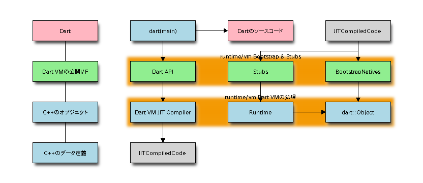
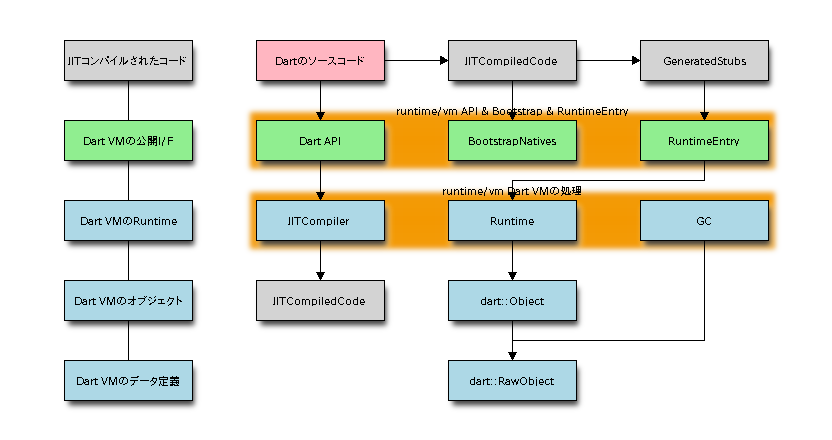
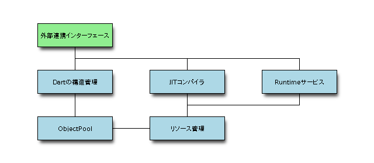

Dart VM Advent Calendar 2012 12/24¶
Dart VMに関して、今回が最終日です。
runtime/include¶
実は、いままで触れてこなかったのですが、dart/runtime/includeというディレクトリ中に、
dart_api.hというのが定義されており、これによりDart VM本体を制御することができます。
dartはruntime/bin/main.ccがmain関数になるのですが、runtime/binからruntime/include/dart_api.hをincludeしています。
Dart VM本体を制御するためのDart APIが、以下のDart APIになります。
runtime/include/dart_api.hは、Dartのnative extension機能でも必須です。
runtime/bin/main.cc
#include "include/dart_api.h"
#include "include/dart_debugger_api.h"
#include "bin/builtin.h"
#include "bin/dartutils.h"
#include "bin/dbg_connection.h"
#include "bin/directory.h"
#include "bin/eventhandler.h"
#include "bin/extensions.h"
#include "bin/file.h"
#include "bin/isolate_data.h"
#include "bin/log.h"
#include "bin/platform.h"
#include "bin/process.h"
#include "platform/globals.h"
int main(int argc, char** argv) {
...
if (ParseArguments(argc,
argv,
&vm_options,
&executable_name,
&script_name,
&dart_options,
&print_flags_seen) < 0) {
}
// Initialize the Dart VM.
if (!Dart_Initialize(CreateIsolateAndSetup, NULL, NULL, ShutdownIsolate,
OpenFile, WriteFile, CloseFile)) {
...
}
// Call CreateIsolateAndSetup which creates an isolate and loads up
// the specified application script.
char* error = NULL;
char* isolate_name = BuildIsolateName(script_name, "main");
if (!CreateIsolateAndSetupHelper(script_name,
"main",
new IsolateData(),
&error)) {
}
Dart_Isolate isolate = Dart_CurrentIsolate();
Dart_Handle result;
Dart_EnterScope();
// Lookup and invoke the top level main function.
result = Dart_Invoke(library, DartUtils::NewString("main"), 0, NULL);
// Keep handling messages until the last active receive port is closed.
result = Dart_RunLoop();
Dart_ExitScope();
// Shutdown the isolate.
Dart_ShutdownIsolate();
// Terminate process exit-code handler.
Process::TerminateExitCodeHandler();
return Process::GlobalExitCode();
}
Dart_xxxというのが、Dart APIになります。
dartはmain処理で、scriptを読み込んで、Isolateを初期化したのち、Dart_Invoke()により実行を始めます。

前の図と違う点は、Dart API経由でJITコンパイルされている点です。JITコンパイルされたコードは、左上です。
JITコンパイルされたコードがDart VMと連携したり、次の呼び出し先をcallする際には、 StubsかBootstrapNativesのメソッドを呼び出します。
JITコンパイラされるコード¶
Dart VMがJITコンパイルするコードには2種類あって、
1つ目は、Dartのソースコード。今まで説明してきたDartのソースコードをJITコンパイルしたものです。
2つ目は、Stubコード。これはIsolateを初期化した際に、JITコンパイルしたコードが呼び出すStubを、 事前にコード生成しておきます。
JITコンパイルしたコードは、BootstrapNativesの処理か、Stub経由でDart VMが提供するRuntime処理を呼び出すことができます。
今までStubと一括りにしていた処理は、generateされたStubと、Stub経由で呼ばれるRuntimeEntryに分かれます。
Stubが存在する理由は、JITコンパイルしたコードから直接Runtimeを呼び出すのではなく、 以下の処理を生成コード側で行うための間接的な構造にしているためです。
- 処理の共通化。JITコンパイルされたユーザプログラムのアセンブラがシンプルになり、サイズが減る。
- Runtime処理ごとに異なる、CallingConvの差異の吸収。Stubを呼び出す際のCallingConvは共通ですが、呼び出すRuntimeごとに異なります。
- Isolate共通のRuntime処理と、各Isolate固有のRuntime処理を呼び分けたい。共通化してテーブル引きしたくない。

stubは以下が定義されており、すべてgenerate処理がアーキテクチャごとに定義されています。
また、VM起動時に1度だけgenerateされるものと、isolateごとにgenerateするものに分けられています。
runtime/vm/stub_code.h
// List of stubs created in the VM isolate, these stubs are shared by different
// isolates running in this dart process.
#define VM_STUB_CODE_LIST(V) \
V(CallToRuntime) \
V(PrintStopMessage) \
V(CallNativeCFunction) \
V(AllocateArray) \
V(CallNoSuchMethodFunction) \
V(InstanceFunctionLookup) \
V(CallStaticFunction) \
V(CallClosureFunction) \
V(FixCallersTarget) \
V(Deoptimize) \
V(DeoptimizeLazy) \
V(BreakpointStatic) \
V(BreakpointReturn) \
V(Subtype1TestCache) \
V(Subtype2TestCache) \
V(Subtype3TestCache) \
V(GetStackPointer) \
V(JumpToExceptionHandler) \
V(JumpToErrorHandler) \
V(IdenticalWithNumberCheck) \
// Is it permitted for the stubs above to refer to Object::null(), which is
// allocated in the VM isolate and shared across all isolates.
// However, in cases where a simple GC-safe placeholder is needed on the stack,
// using Smi 0 instead of Object::null() is slightly more efficient, since a Smi
// does not require relocation.
// List of stubs created per isolate, these stubs could potentially contain
// embedded objects and hence cannot be shared across isolates.
#define STUB_CODE_LIST(V) \
V(InvokeDartCode) \
V(AllocateContext) \
V(UpdateStoreBuffer) \
V(OneArgCheckInlineCache) \
V(TwoArgsCheckInlineCache) \
V(ThreeArgsCheckInlineCache) \
V(OneArgOptimizedCheckInlineCache) \
V(TwoArgsOptimizedCheckInlineCache) \
V(ThreeArgsOptimizedCheckInlineCache) \
V(ClosureCallInlineCache) \
V(MegamorphicCall) \
V(OptimizeFunction) \
V(BreakpointDynamic) \
V(EqualityWithNullArg) \
Isolateごとに分割するStubをぱっとみると、
- InvokeとOptimizeFunction。Dart srcとJITコンパイル済みCodeの管理がIsolateごとに分かれているためです。
- InlineCache系。これもJITコンパイルしたCodeに依存するためです。
- リソース管理系、AllocateContextやUpdateStoreBufferは、HeapやGC向けの処理になります。これらもIsolateごとに分かれています。
まとめ¶
Dart VMの構成要素は、以下に分けられると考えています。
各要素は相互に連携しています。
- Dartの構造管理
- ObjectPool
- JITコンパイラ
- Runtimeサービス
- リソース管理
- 外部連携インターフェース

Dartの構造管理¶
Dart のオブジェクト間の構造管理に関してはまったく触れてきませんでした。
DartはIsolateというTopLevelのContextが存在し、 Isolateごとにソースコードの管理、JITコンパイルされたコードの管理、Heapの管理、GCの管理を行います。
Isolateの配下には、Class or Function -> ContextScopeなどを定義しています。
他にも、Closure、LocalScopeなどがあり、function_level, loop_level, context_levelなどに応じて、 ネストして定義しています。
ObjectPool¶
あまりObjectPoolという呼び方はしていませんが、18日目に紹介した、ObjectとRawObject群のことです。
ObjectとRawObjectを継承したクラスは多数存在します。
Objectクラス系が、主に操作を定義しています。 そのため、ObjectクラスのメソッドはBootstrapNativesによって外部に公開されます。
Objectクラスは、必ず対応するRawObjectの参照Raw()をフィールドに持ちます。
RawObjectは実データを定義するクラスです。 そのため、GCの対象はすべてRawObjectになります。
JITコンパイラ¶
Dart VMのJITコンパイラは、以下のパーツに分解されます。
- Parser(DartのソースコードをASTに変換する処理)
- AST(各種ASTNodeの定義)
- IRBuilder(ASTからIRに変換する処理)
- IR(各種IRの定義)
- Optimizer(IRを最適化する処理)
- Compiler(IRからアセンブラに変換する処理)
- Assembler(アセンブラからObjectCodeに変換する処理)
非最適化JITコンパイルの場合、Optimizerの処理をskipします。
Dart VMは、Dartのソースコード、AST、ObjectCode(非最適化、最適化の2つ)を管理対象とします。
- Dart VM Advent Calendar 2012 12/12 JITコンパイルの概要
- Dart VM Advent Calendar 2012 12/14 IR
- Dart VM Advent Calendar 2012 12/19 Optimizer(DominatorBasedCSE)
- Dart VM Advent Calendar 2012 12/20 Optimizer(LICM)
Runtimeサービス¶
Dart VMは、JITコンパイルされたコードから呼ばれるRuntimeサービスを定義しています。
- JITコンパイル
- リソース管理(Allocate/StoreBuffer更新)
- Call
- InlineCaching & TypeFeedback
- Deoptimization
Allocateは、newした場合の空きメモリの確保です。 StoreBuffer更新は、Old領域からNew領域への参照を更新し、世代別GCで処理します。
Callは、メソッド呼び出しの解決です。Dart VMの場合、呼び出し先のアドレスを直接Callするのではなく、 CallSiteごとにTableを引くことが多いです。
InlineCachingは、非最適化コンパイル時の動的なメソッド呼び出し処理です。 非最適化時の場合、呼び出し候補は多数存在するため、 InlineCachingというテクニックを使用して呼び出し候補を高速に探し、解決します。
TypeFeedbackは、InlineCacheの際に解決したメソッド呼び出し先を記録する処理です。
CallSiteごとのメソッド呼び出し先情報を最適化JITコンパイル時に渡します。
Deoptimizationは、最適化JITコンパイルされたコードの実行途中から、非最適化JITコンパイルされたコードに戻す処理です。
Deoptimizationがあるため、最適化JITコンパイル時に、投機的に型を決めたり、投機的にinline展開を行うことができます。
- Dart VM Advent Calendar 2012 12/11 JITコンパイル
- Dart VM Advent Calendar 2012 12/15 StoreBuffer
リソース管理¶
Dart VMのリソース管理は、ざっくり以下です。
- Heap
- Handle(RAII)
- GC
- Zone
DartのObjectPoolはすべてHeapで管理します。HeapはNew領域とOld領域にわけ、世代別GCによって回収します。
Allocateしたメモリを管理するHandle(RAII)を多数提供しています。Handleの参照は、GCにも関係します。
Zoneは、Heap以外に確保する一時的なメモリ確保、管理です。 ObjectPool以外に使うことが多く、処理が終了したら一斉に解法します。
ScopeにHandleされたスタックのようなものかもしれません。
- Garbage Collection Advent Calendar 2012 12/10 HeapとGCの概要に関して
- Garbage Collection Advent Calendar 2012 12/17 GCのScavenger
外部連携インターフェース¶
Dart VMの外部連携インターフェースを定義しています。
- DartAPI
- BootstrapNatives
- Stubs
- NativeEntry
- CodeObserver
- Debugger
DartAPIは、runtime/includeに定義されたDart VMを制御するためのAPIです。
BootstrapNativesは、主にDartのCore APIがnative extensionで呼び出すシンボルです。
Stubsは、JITコンパイルしたコード用に用意された補助です。
NativeEntryは、上記BootstrapNativesとStub経由で呼ばれるシンボルと処理を定義します。
CodeObserverとDebuggerは、Dart VMと連携する外部プログラム用に用意した処理になります。
プロセスレベルで連携したり、何らかのファイルを経由して連携します。
- Dart VM Advent Calendar 2012 12/09 CodeObserver(perf連携)
- Dart VM Advent Calendar 2012 12/16 NativeEntry
- Dart VM Advent Calendar 2012 12/23 BootstrapNatives
- Dart VM Advent Calendar 2012 12/24 Stub